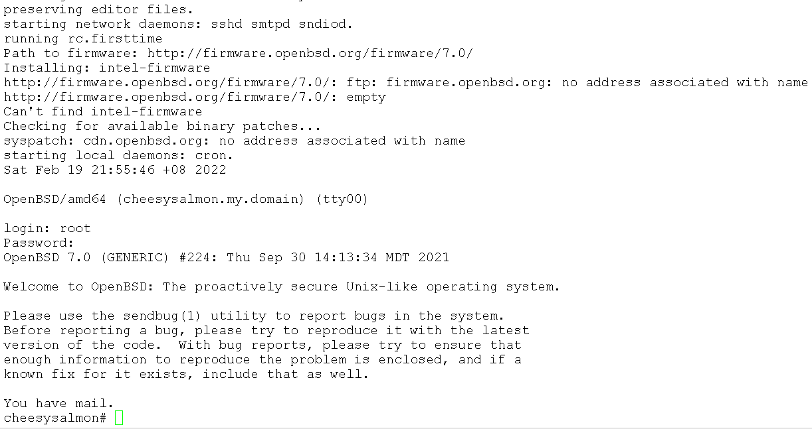

penulis : Badli Al Rashid
e-mel : badli.a.r@gmail.com
tarikh : 19 Febuari 2022
lesen : Creative Commons
1 - Permulaan
Saya bukannya pakar pengguna OpenBSD atau "unix guru". Saya pengguna biasa sahaja.
Gambar 1 - MangaRamblo
Saya mulanya tertarik kepada watak "MangaRamblo" ia berbeza dengan watak BSD Daemon. Ia Seolah olah dilukis oleh pelukis X-Men sembilan puluhan, Joe Madureira. Lukisan di pengaruhi pelukis Manga Jepun yang membuatnya unik. Watak tersebut juga digunakan oleh halaman OpenBSD Journal.
Perisai percuma OpenBSD yang diusahakan secara terbuka oleh sukarelawan dari seluruh dunia. Ia berasal dari negara Kanada.Bermula pada tahun 1996 oleh pengasasnya, Theo De Raadt. Pada masa itu dia telah disingkirkan oleh kumpulan NetBSD yang mengusahakan perisai terbuka NetBSD. 1* 2** . Walaupun begitu, kedua dua kumpulan ini masih berkolobirasi sama.
Populariti OpenBSD tidaklah banyak berbanding perisai lain seperti FreeBSD, Apple macOS dan jugaMicrosoft Windows.
Namun kebanyakan perisai Unix atau semacam Unix menggunakan aplikasi popular mereka OpenSSH.
Gambar 2 - StarryPointers, semacam lukisan Vincent Van Goh
Semasa menulis dokumen ini, perisai OpenBSD di tahap versi 7.0
2 - Perbezaan Di Antara OpenBSD Dan Debian
Pengguna OpenBSD berasal dari perisai yang lain. Saya dulu menggunakan Microsoft Windows dan GNU/Linux.
Deskripsi
OpenBSD
Debian
Negara Asal
Kanada
Amerika Syarikat
Keluarga Unix
*BSD
**GNU/Linux
Lessen
BSD
GPL
Perkembangan dan Penyelidikan
Satu Kumpulan
***Integrasi
Lokasi Kernel
/
/boot
Default Shell
ksh
bash
Mengurus Applikasi
pkg_add
apt
Format Applikasi Pakage
.tgz
.deb
Bagi pengguna biasa perbezaan di antara perisai ini tidaklah begitu ketara, namun sumber kod mereka agak berbeza.
* OpenBSD tergolong dari keluarga BSD Unix, Sumber kod bercabang dari NetBSD, Kod NetBSD bercabang dari 386BSD. Dan 386BSD bercabang dari kod 4.3 BSD Net/2 iaitu BSD (Berkley Software Distribution) yang di uruskan oleh Computer System Research Group (CSRG), di Universiti of Karlifornia, Berkeley.
** GNU/Linux tergolong dari keluarga semacam Unix.GNU atau "GNU Not Unix" dan Kernel
Linux.
*** Pengurusan Userland tools dibuat oleh sukarelawan GNU dan Linux Kernel di uruskan oleh sukarelawan Linux. Sukarelawan Debian akan menguruskan integrasi aplikasi dan menyumbang kepada pembaik pulih aplikasi kepada pengurusnya yang asal.
3 - Pemasangan OpenBSD
Sebelum anda memasang OpenBSD ke dalam Laptop, Desktop atau Server anda. Sebaiknya kita selidiki jikalau perkakas anda serasi dengan OpenBSD. Maksud perkakas di sini ialah:-
Storage controller
Network Adapter
Wireless Adapter
Graphics Card
Audio Card
dan perkakas multimedia yang lain.
Berbanding dengan perkembangan Linux, perkembangan perkakas drivers OpenBSD akan setapak di belakang. Selalunya perisai OpenBSD digunakan untuk Server, Router dan Firewall tetapi ada juga yang memasang untuk digunakan harian ke dalam Laptop dan Desktop.
Sekiranya anda belum selesa dengan pemasang OpenBSD ke dalam Laptop, Desktop atau Server anda boleh memasang perisai tersebut secara virtual seperti:-
macppc - Processor Power PC telah dipakai oleh Apple sebelum mereka betukar ke Intel Processor dahalu
Sekiranya anda memasang Aplikasi untuk processor i386, ia tidak akan berfungsi ke amd64 atau macppc. Begitu juga sebaliknya
Sebelum memasang perisai ada beberapa maklumat anda perlu ada terlebih dahulu seperti:-
hostname ia itu nama komputer anda
IP address
IP address DNS
Dokumentasi untuk menyimpan file-file pemasangan OpenBSD di dalam media yang anda pilih ada di dalam halaman utama. Masukkan media tersebut and mulakan pengembaraan awda ke dalam alam OpenBSD.
3 - 1 Boot Dari Pemasangan Media
Gambar 3 - Boot dari Cakera Padat
Gambar 3 di atas menunjukan OpenBSD menunggu hendak membuat boot dar Cakera Padat. Tekan "Enter" untuk meneruskan
3 - 2 Skrip pemasangan OpenBSD
Gambar 4 - 'i' untuk Install
Semasa process Boot, ia akan menunjukkan perkakas yang ada terpasang di dalam sistem anda. Setelah selesai ia menunjukkan beberapa pilihan. Tekan huruf "i" and tekan "enter" untuk memulakan pemasang OpenBSD
3 - 3 Akses Sistem dan Akaun root
Gambar 5 - Akses dan Root
Anda boleh mengakses sistem anda dari sistem yang lain dengan mengaktifkan SSH daemon dalam process boot. Sekiranya jika anda tidak mahu SSH daemon berfungsi anda boleh menjawab tidak. Awda hanya akses ke sistem secara fisi-kal
3 - 4 Pembahagian Struktur Cakera Keras
Gambar 6 -Struktur Cakera Keras
Struktur Cakera Keras yang saya pilih adalah yang disediakan oleh skrip pemasangan. Anda boleh mengubah struktur mengikut ke hendak awda atau mengubahnya selepas selesai pemasangan.
Dulu semasa saya belajar mengenai Debian ada orang menyebut tentang /exports, saya bengang apa yang dimaksudkan dengan folder exports ? Saya mendapat tahu, dia menggunakan untuk mount point NFS server mereka. Struktur folder mereka berbeza dengan yang saya biasa
3 - 5 Komponen OpenBSD
Gambar 7 - Komponen OpenBSD
Di sini kita memilih semua komponen OpenBSD yang ada
bsd - komponen kernel *perlu
bsd.mp - komponen kernel untuk muti prosessor
bsd.rd - komponen kernel ramdisk
base70.tgz - komponen utama
etc.tgz - konfiguration sistem utama
comp70.tgz - sistem kompiler, file library dan sebagainya
game70.tgz - game teks
xetc70.tgz - kofiguration x11
xserv.tgz - komponen X11
xbase70.tgz - komponen utama X11
xshare70.tgz - file ini perlu untuk xbase
xfont70.tgz - font X11
3 - 6 Waktu tempatan
Gambar 8 - Waktu tempatan
Di sini sama memilih "Asia/Brunei" sebagai waktu tempatan dan tekan enter untuk sistem reboot.
3 - 7 Pertama kali Log Masuk ke OpenBSD

Gambar 9 - Pertama kali Log Masuk
System anda sudah boot ke dalam perisai OpenBSD dan jika anda terlihat ada url tertera http://firmware.openbsd.org, OpenBSD sedang memasang drivers proprietary untuk perkakas anda, dari gambar di atas menunjukkan OpenBSD memasang drivers untuk perkakas Intel. Kalau tidak ada access internet anda boleh menggunakan fw_update untuk memasang drivers tersebut apabila mendapat access internet.
Saya log masuk dengan pengguna root sistem mengeluar kan mesej penyata
3 - 8 Log masuk dari luar
Gambar 10 - Menggunakan PuTTY untuk log masuk ke OpenBSD
OpenBSD dapat di akses dari luar. Maksud di sini kita log masuk ke sistem tidak berada di tempat sistem itu. kita memerlukan alamat IP atau alamat penuh URL OpenBSD. Selain itu menggunakan aplikasi utility seperti:-
PuTTY - Aplikasi mudah terminal untuk perisai * Microsoft Windows menggunakan protokol SSH
WinSCP - Aplikasi untuk memindah file menggunakan SSH untuk perisian * Microsoft Windows menggunakan protokol SSH
ssh - Aplikasi terminal tersedia di dalam perisai Linux dan Windows
scp - Aplikasi memindah file tersedia di dalam perisai Linux dan Windows menggunakan protokol SSH
Gambar 10 menunjukkan kita telah log masuk dengan aplikasi PuTTY. Putty adalah aplikasi terminal, anda boleh memuat turun aplikasi di halaman resmi .


{kind=link}